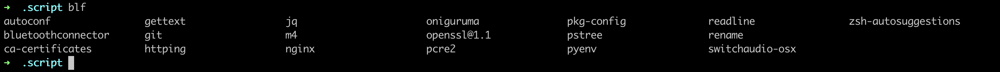
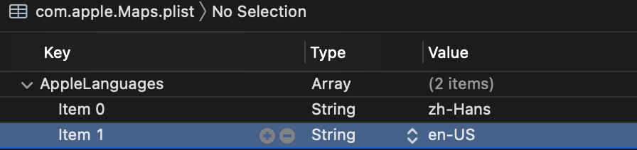

Images Block Image Macro Use URL  Use Relative Path Inline Image Macro Click to get the party started. Set Images Directory User image directory Position and Frame Image Text below images.  Image A Text below images. Adjust Image Size Specify Image Format image::https://example.org/avatar